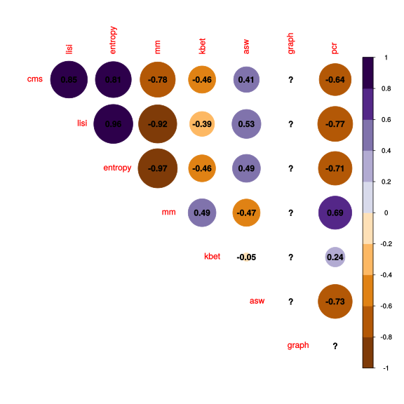

suppressPackageStartupMessages({
library(scater)
library(CellMixS)
library(purrr)
library(tidyr)
library(dplyr)
library(gridExtra)
library(scran)
library(cowplot)
library(jcolors)
library(ggpubr)
library(stringr)
library(viridis)
library(scales)
library(hrbrthemes)
library(magrittr)
library(forcats)
library(corrplot)
library(RColorBrewer)
library(gridExtra)
library(grid)
library(cowplot)
})
options(bitmapType='cairo')metrics <- unlist(c(strsplit(params$metrics, ",")))
chars <- unlist(c(strsplit(params$chars, ",")))
cor_list <- lapply(chars, function(char){
cor_file <- paste0(params$cor_path, "cor_", char, ".rds")
cor <- readRDS(cor_file)
}) %>% set_names(chars)
#make sure all imputs have common metric names
metrics[which(metrics %in% c("graph_connectivity", "cms_default",
'cms_kmin', 'cms_bmin'))] <- c("graph", "cms", "cms_k", "cms_b")
metrics <- metrics[-which(metrics %in% c("cms_k", "cms_b", "isi", "wisi"))]
metric_com <- function(cor_res){
met_all <- colnames(cor_res)
cms_kmin <- grep("kmin", met_all)
cms_bmin <- grep("bmin", met_all)
cms_ind <- grep("cms(?!.*min)", met_all, perl = TRUE)
graph_ind <- grep("graph", met_all)
colnames(cor_res)[c(cms_ind, cms_kmin, cms_bmin)] <- c('cms', 'cms_k', 'cms_b')
colnames(cor_res)[graph_ind] <- "graph"
rownames(cor_res) <- colnames(cor_res)
cor_res <- cor_res[metrics, metrics]
}
cor_list <- cor_list %>% map(metric_com)
#get mean of random data to weight tasks equally
rand_char <- chars[grep("random", chars)]
cor_list[["random"]] <- t(apply(simplify2array(cor_list[rand_char]), 1:2,
mean, na.rm = TRUE))
cor_list <- cor_list[!names(cor_list) %in% rand_char]
# Get mean for all tasks
cor_mean <- Reduce("+", cor_list)/length(cor_list)
cols <-c(c(jcolors('pal6'),jcolors('pal8'), jcolors('pal7'))[c(1,12,18,25,27,2,4,7,3,6,8,14,9,20)],jcolors('pal4'))
names(cols) <- c()
cols_data <-c(c(jcolors('pal6'),jcolors('pal8'))[c(1,8,14,5,2:4,6,7,9:13,15:20)],jcolors('pal4'))
names(cols_data) <- c()#### ---------- Order by metric type ----------------------------------#######
#(manual needs to be adjusted if new metrics are added)
cms_ind <- grep("cms", colnames(cor_mean))
lisi_ind <- grep("isi", colnames(cor_mean))
ent_ind <- grep("entropy", colnames(cor_mean))
mm_ind <- grep("mm", colnames(cor_mean))
asw_ind <- grep("sw", colnames(cor_mean))
kbet_ind <- grep("kbet", colnames(cor_mean))
graph_ind <- grep("graph", colnames(cor_mean))
pcr_ind <- grep("pcr", colnames(cor_mean))
metric_order <- colnames(cor_mean)[c(cms_ind, lisi_ind, ent_ind, mm_ind,
kbet_ind, asw_ind, graph_ind, pcr_ind)]
names(cols) <- metric_order
cols <- cols[metric_order]
####--------------------------------------------------------------------########
cor_mean <- cor_mean[metric_order, metric_order]
corrplot(cor_mean,
type="upper",
order="original",
hclust.method = "complete",
col=brewer.pal(n=10, name="PuOr"),
addgrid.col = NA,
addCoef.col = "black",
diag = FALSE)
#Order by hclust (take absolute values as the direction of correlation is irrelevant)
cor_mean_abs <- abs(cor_mean)
corrplot(cor_mean_abs,
type="upper",
order="hclust",
hclust.method = "complete",
col=brewer.pal(n=10, name="PuOr"),
addgrid.col = NA,
addCoef.col = "black",
diag = FALSE)#### Visualize correlation contributions
cor_list <- cor_list %>% map(as.data.frame)
cor_wide <- bind_rows(cor_list, .id = "benchmark_task") %>%
mutate(metric = rep(rownames(cor_list[[1]]), length(cor_list)))
cor_long <- cor_wide %>% pivot_longer(-c(metric, benchmark_task), names_to = "metric2",
values_to = "correlation")
cor_bin_long <- cor_long %>% mutate(correlation_bi = ifelse(abs(correlation) >= 0.8, 1, 0),
correlation_part = ifelse(abs(correlation) >= 0.8, 0.25, 0))
cor_bin_red <- cor_bin_long[!duplicated(t(apply(cor_bin_long[,c("metric", "metric2", "benchmark_task")], 1, sort))),]
g1 <- ggplot(cor_bin_long, aes(x="", y=correlation_part, fill=benchmark_task)) +
geom_bar(width = 1, stat = "identity") +
coord_polar("y", start=0) + scale_fill_manual(values = cols_data[1:4]) +
facet_grid(rows = vars(metric), cols = vars(metric2), drop=TRUE) +
theme_minimal() +
theme(
axis.title.x = element_blank(),
axis.title.y = element_blank(),
panel.border = element_blank(),
panel.grid=element_blank(),
axis.ticks = element_blank(),
axis.text.x=element_blank(),
plot.title = element_text(size=14),
panel.grid.minor = element_blank()
)cor_bin_long$metric <- factor(cor_bin_long$metric, levels = metric_order)
cor_bin_long$metric2 <- factor(cor_bin_long$metric2, levels = metric_order)
cor_bin_long$M1 <- as.numeric(cor_bin_long$metric)
cor_bin_long$M2 <- as.numeric(cor_bin_long$metric2)
cor_bin_long <- cor_bin_long %>% arrange(M1) %>%
group_by(M1) %>% arrange(M2)
p.list = mapply(FUN=function(m1, m2) {
cor_bin <- cor_bin_long[cor_bin_long$M1 == m1 & cor_bin_long$M2 == m2, ]
cor_bin <- cor_bin %>% mutate(mean_correlation = mean(correlation))
cor_bin$mean_correlation <- round(cor_bin$mean_correlation, digits = 2)
g <- ggplot(cor_bin, aes(x="", y=correlation_part)) +
xlab(cor_bin$metric) +
ylab(cor_bin$metric2) +
theme_minimal() +
theme(
axis.title.x = element_text(size = 10, face = "bold"),
axis.title.y = element_text(size = 10, face = "bold"),
panel.border = element_blank(),
panel.grid=element_blank(),
axis.ticks = element_blank(),
axis.text=element_blank(),
legend.position="none",
plot.title = element_text(size=14),
panel.grid.minor = element_blank()
)
if (m1 == m2) {
g = g + geom_text(aes(label=metric),
size = 4.5, colour="red")
}
if (m1 < m2) {
g = g + geom_text(aes(x = 0.5, y = 0.5, label=mean_correlation), size = 4) +
theme(panel.background=element_rect(fill=hcl(180,100,60, alpha=0.3)))
}
if (m1 > m2) {
g = g + geom_bar(aes(fill=benchmark_task), width = 2, stat = "identity", colour = "black") +
coord_polar(theta='y', start=0) +
geom_bar(aes(y=correlation_bi, fill = NA), width = 2, stat = "identity", colour = "black") +
coord_polar(theta='y', start=0) +
scale_fill_manual(values = cols_data[1:4]) +
scale_y_continuous(limits = c(0,1))
}
if(m1 != 1) {
g = g + ylab("") +
theme(axis.text.y=element_blank(),
axis.ticks.y=element_blank(),
axis.title = element_blank())
}
if(m2 != max(cor_bin_long$M2)) {
g = g + xlab("") +
theme(axis.text.x=element_blank(),
axis.ticks.x=element_blank(),
axis.title = element_blank())
}
return(g + theme(plot.margin=unit(c(-0.3,-0.3,-0.3,-0.3), "lines")))},
expand.grid(M1=unique(cor_bin_long$M1), M2=unique(cor_bin_long$M1))[[1]],
expand.grid(M1=unique(cor_bin_long$M1), M2=unique(cor_bin_long$M2))[[2]], SIMPLIFY=FALSE)
#get legend
g_legend<-function(a.gplot){
tmp <- ggplot_gtable(ggplot_build(a.gplot))
leg <- which(sapply(tmp$grobs, function(x) x$name) == "guide-box")
legend <- tmp$grobs[[leg]]
return(legend)}
mylegend <- g_legend(g1)
grid.arrange(top = textGrob("Metrics correlation", gp=gpar(fontsize=15,font=8, face = "bold")),
arrangeGrob(
arrangeGrob(textGrob("", rot=90),
do.call(arrangeGrob, c(p.list,
ncol=length(levels(cor_bin_long$metric)))), widths=c(0.05,0.95)),
textGrob(""), heights=c(0.95,0.05)), mylegend, ncol=2,widths=c(10, 2.2))